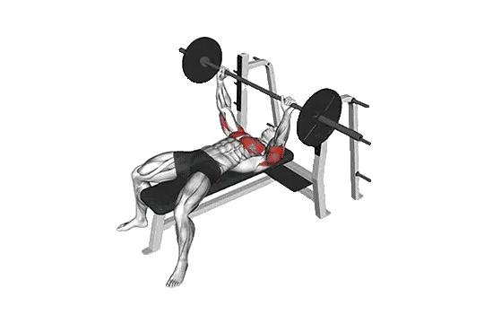

中級平均重量
一般中級訓練者的參考值。
男性
204 lb
女性
103 lb
Spoto推舉平均重量 [1RM]
| 等級 | ||
|---|---|---|
| 初學者 | 99 lb | 34 lb |
| 初級者 | 145 lb | 63 lb |
| 中級者 | 204 lb | 103 lb |
| 進階者 | 272 lb | 154 lb |
| 菁英 | 347 lb | 211 lb |
註：這些標準是以一般訓練者的 1RM 為基準估算。體重、年齡等個人因素都可能造成差異。詳細資料請參考下方表格。
Spoto推舉力量標準(lb)
男性按體重(lb)資料 [1RM]
| 體重 | 初學者 | 初級者 | 中級者 | 進階者 | 菁英 |
|---|---|---|---|---|---|
| 110 | 49 | 78 | 114 | 158 | 206 |
| 120 | 59 | 90 | 129 | 175 | 226 |
| 130 | 69 | 102 | 143 | 191 | 244 |
| 140 | 78 | 113 | 157 | 207 | 262 |
| 150 | 88 | 124 | 170 | 222 | 279 |
| 160 | 97 | 135 | 183 | 237 | 295 |
| 170 | 106 | 146 | 195 | 251 | 311 |
| 180 | 115 | 157 | 207 | 265 | 327 |
| 190 | 124 | 167 | 219 | 278 | 341 |
| 200 | 133 | 177 | 231 | 291 | 356 |
| 210 | 141 | 187 | 242 | 304 | 370 |
| 220 | 150 | 197 | 253 | 317 | 383 |
| 230 | 158 | 206 | 264 | 329 | 397 |
| 240 | 166 | 216 | 274 | 340 | 410 |
| 250 | 174 | 225 | 285 | 352 | 422 |
| 260 | 182 | 234 | 295 | 363 | 434 |
| 270 | 190 | 243 | 305 | 374 | 446 |
| 280 | 198 | 251 | 314 | 384 | 458 |
| 290 | 205 | 260 | 324 | 395 | 469 |
| 300 | 212 | 268 | 333 | 405 | 480 |
| 310 | 220 | 276 | 342 | 415 | 491 |
男性按年齡資料 [1RM]
| 年齡 | 初學者 | 初級者 | 中級者 | 進階者 | 菁英 |
|---|---|---|---|---|---|
| 15 | 84 | 124 | 174 | 232 | 295 |
| 20 | 96 | 142 | 199 | 265 | 338 |
| 25 | 99 | 145 | 204 | 272 | 347 |
| 30 | 99 | 145 | 204 | 272 | 347 |
| 35 | 99 | 145 | 204 | 272 | 347 |
| 40 | 99 | 145 | 204 | 272 | 347 |
| 45 | 94 | 138 | 194 | 258 | 329 |
| 50 | 88 | 130 | 182 | 243 | 309 |
| 55 | 81 | 120 | 168 | 224 | 286 |
| 60 | 74 | 109 | 153 | 205 | 261 |
| 65 | 67 | 99 | 139 | 185 | 236 |
| 70 | 60 | 89 | 124 | 166 | 211 |
| 75 | 54 | 79 | 111 | 148 | 189 |
| 80 | 48 | 71 | 99 | 133 | 169 |
| 85 | 43 | 64 | 89 | 119 | 151 |
| 90 | 39 | 57 | 80 | 107 | 137 |
女性按體重(lb)資料 [1RM]
| 體重 | 初學者 | 初級者 | 中級者 | 進階者 | 菁英 |
|---|---|---|---|---|---|
| 90 | 16 | 35 | 64 | 101 | 145 |
| 100 | 19 | 41 | 72 | 111 | 156 |
| 110 | 23 | 46 | 79 | 120 | 167 |
| 120 | 27 | 52 | 86 | 129 | 178 |
| 130 | 31 | 57 | 93 | 137 | 187 |
| 140 | 35 | 62 | 99 | 145 | 196 |
| 150 | 39 | 67 | 105 | 152 | 205 |
| 160 | 42 | 72 | 111 | 159 | 213 |
| 170 | 46 | 77 | 117 | 166 | 221 |
| 180 | 49 | 81 | 123 | 173 | 229 |
| 190 | 53 | 86 | 128 | 179 | 236 |
| 200 | 56 | 90 | 133 | 186 | 243 |
| 210 | 60 | 94 | 139 | 192 | 250 |
| 220 | 63 | 98 | 143 | 197 | 257 |
| 230 | 66 | 102 | 148 | 203 | 263 |
| 240 | 69 | 106 | 153 | 208 | 269 |
| 250 | 72 | 110 | 157 | 214 | 276 |
| 260 | 75 | 113 | 162 | 219 | 281 |
女性按年齡資料 [1RM]
| 年齡 | 初學者 | 初級者 | 中級者 | 進階者 | 菁英 |
|---|---|---|---|---|---|
| 15 | 29 | 54 | 88 | 131 | 179 |
| 20 | 33 | 62 | 101 | 150 | 205 |
| 25 | 34 | 63 | 103 | 154 | 211 |
| 30 | 34 | 63 | 103 | 154 | 211 |
| 35 | 34 | 63 | 103 | 154 | 211 |
| 40 | 34 | 63 | 103 | 154 | 211 |
| 45 | 32 | 60 | 98 | 146 | 200 |
| 50 | 30 | 56 | 92 | 137 | 188 |
| 55 | 28 | 52 | 85 | 127 | 174 |
| 60 | 25 | 47 | 78 | 115 | 158 |
| 65 | 23 | 43 | 70 | 104 | 143 |
| 70 | 21 | 38 | 63 | 94 | 128 |
| 75 | 18 | 34 | 56 | 84 | 115 |
| 80 | 17 | 31 | 50 | 75 | 103 |
| 85 | 15 | 28 | 45 | 67 | 92 |
| 90 | 13 | 25 | 41 | 60 | 83 |
註：一般健身房的標準槓鈴通常為44 lb。
目標肌群
| 分類 | 肌群 |
|---|---|
| 主動肌 | 胸大肌, 肱三頭肌, 肱二頭肌 |
| 輔助肌群 | 三角肌 |
| 穩定肌群 | 腹外斜肌, 斜方肌 |
| 握力 | 前臂屈肌群 |
用 Shiba App 記錄與分析
集中查看重量、次數與進步變化。
表格說明
| 等級 | 說明 | 分布 |
|---|---|---|
| 初學者 | 掌握正確動作，並持續訓練至少 1 個月。 | 後 5% |
| 初級者 | 持續規律訓練至少 6 個月。 | 前 80% |
| 中級者 | 持續規律訓練至少 2 年。 | 前 50% |
| 進階者 | 持續規律訓練超過 5 年。 | 前 20% |
| 菁英 | 針對該動作專項訓練超過 5 年。 | 前 5% |